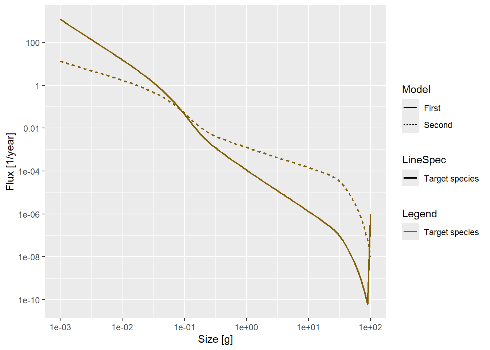

library(mizer)
varying_beta_sigma_test <- function(beta_new = 100, sigma_new = 1.3) {
test_sizes <- list(
"small" = c(0.1, 1),
"medium" = c(1, 10),
"large" = c(10, 100)
)
p <- newSingleSpeciesParams(lambda = 2.05, beta = beta_new, sigma = sigma_new)
r <- resource_rate(p)
r <- r * 0.001
p <- setResource(p, resource_rate = r, resource_dynamics = "resource_semichemostat")
rng <- test_sizes[["large"]]
idx <- p@w >= rng[1] & p@w <= rng[2]
initialN(p)[, idx] <- initialN(p)[, idx] * 5
project(p, t_max = 100, t_save = 0.5)
}
sim <- varying_beta_sigma_test(30, 0.5)Day 5: Visualising the Flux
research
mizer
flux
nonlinear-dynamics
strogatz
Experimenting with flux visualisations in mizerExperimental, and working through two-dimensional flows in Strogatz.
Morning: Following the Flow
Yesterday’s phase diagram gave a map of where the system oscillates. Today’s question was more concrete: when it does oscillate, where is the biomass actually moving? The answer required shifting from plotting biomass directly to plotting flux, the rate at which biomass flows through each size class.
Mizer provides getFlux() for exactly this, and most of the morning was spent getting to grips with what it returns and how best to display it.
Setting Up
The same single-species setup as previous days: \(\lambda = 2.05\), \(\beta = 30\), \(\sigma = 0.5\), with a resource rate scaled down by a factor of 1000 and a fivefold perturbation applied to the large size class (10–100 g) in the initial condition.
Exploring the Plots
The first plot was the energy growth rate across size classes over time:
plotHover(getEGrowth(sim))This gives a sense of which sizes are gaining energy and how that changes over the simulation. But what was really of interest was the flux itself.
flux <- getFlux(sim)
plotHover(flux)Raw flux is dominated by the smallest size classes, where numbers are enormous. To get a clearer picture of where the biomass is flowing rather than just the individuals, the flux can be weighted by body mass:
biomass_flux <- flux
biomass_flux[] <- sweep(flux, 3, w(getParams(sim)), "*")
plotHover(biomass_flux)Finally, plotting both flux and biomass flux together on log-log axes lets you see the relationship between the two across the full size range:
plot2(biomass_flux, flux, log = "xy")
What the Flux Plot Shows
The picture that emerged was stark. Flux is very high at the smallest sizes, around \(10^{-3}\) g, and drops sharply across several orders of magnitude, reaching essentially zero by 0.1 g. Very little biomass is successfully transiting into the larger size classes.
This is almost certainly a consequence of the extremely low resource rate. With so little food available, the growth rates at intermediate and large sizes are negligible, and the perturbation applied to the large size class has almost no pathway through which it can be replenished. The oscillations seen in previous days are playing out almost entirely in the small-to-medium size range.
It raises a question for later: what does the flux look like under a more realistic resource rate? Is the sharp cutoff a property of the model or an artefact of the deliberately depleted resource?
Afternoon: Strogatz Chapter 5
The afternoon shifted to theory. Chapter 5 of Nonlinear Dynamics and Chaos by Strogatz moves from one-dimensional flows to nonlinear flows in two dimensions, and the step up in richness is immediate.
In one dimension, a trajectory has nowhere to go but left or right. In two dimensions, the phase plane opens up and fixed points acquire character: stable and unstable nodes, saddle points, spirals, centres. Trajectories can approach a fixed point along a preferred direction, orbit around it indefinitely, or be repelled.
The analytical core of the chapter is linearisation. Near a fixed point, a nonlinear system can be approximated by a linear one, and the Jacobian evaluated at that point tells you everything about local behaviour. The eigenvalues of the Jacobian determine whether trajectories spiral in or out, approach along a curve, or diverge and a clean diagram classifying fixed points by the trace and determinant of the Jacobian puts the whole picture in one place.
What resonates most clearly with the simulation work is the limit of linearisation. It is precise and useful near a fixed point, but says nothing about the global structure of the phase plane: whether distant trajectories eventually converge, whether limit cycles exist, or whether the system can be pushed from one basin of attraction into another. That gap between local and global is exactly what made the flux plots this morning interesting. The model’s local behaviour near steady state is one thing, but following where the biomass actually goes is another.
The next chapter will presumably start closing that gap. For now, the foundations are solid.
What’s Next
Two threads to follow up. On the simulation side: rerun the flux analysis under a less extreme resource rate and check whether the cutoff at 0.1 g shifts or disappears. On the theory side: continue with Strogatz and work through the tools for global analysis which are likely to be directly relevant to understanding why the oscillatory regime exists where it does in parameter space.